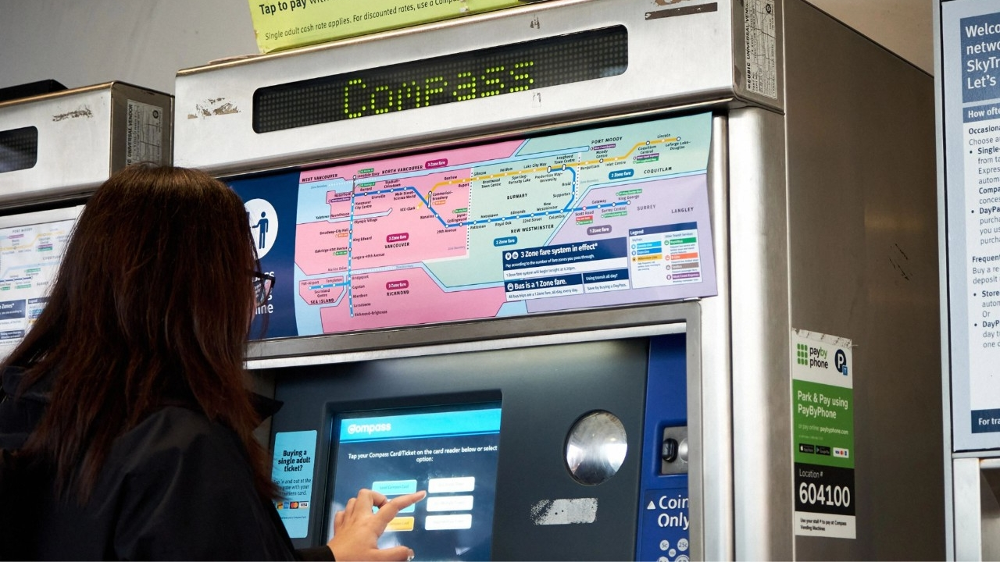

TransLink Interactive Map
Interaction Design (IAT 333)
Reimagining the existing map on TransLink's SkyTrain ticket machines to reduce confusion about the SkyTrain's zone-based fare system amongst new and inexperienced riders.
View Project →